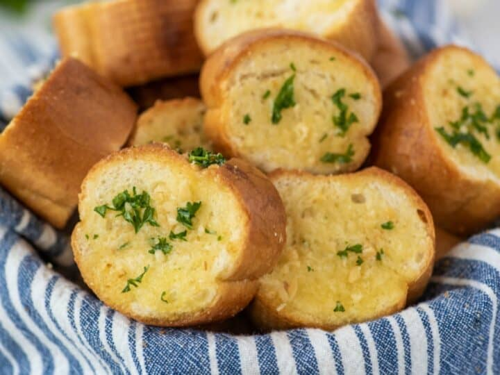

Garlic Bread

Garlic bread is served at many restaurants. It is mainly served as a side dish alongside a main course such as pizza.
Whether you're cooking for someone else or saving money by eating at home, garlic bread is a good recipe to start with.
It requires few ingredients and less steps to follow, making it easy to memorize if you're trying to cook without the
recipe.
Ingredients
- 1/4th cup Country Crock® Spread
- 1 teaspoon mixed herbs, dry
- 1/2 teaspoon garlic powder
- 1 (12 ounce) loaf French or Italian bread
Directions
- Set an oven rack about 6 inches from the heat source and preheat the oven's broiler.
- Combine all ingredients except bread in small bowl. Arrange bread on baking sheet; spread with herb mixture.
- Broil until golden, about 2 minutes.